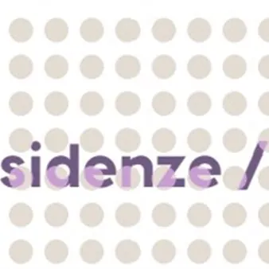

sab 21 nov
"Together Aperto / FVG70" Simposio e inaugurazione mostra
Sabato 21 novembre 2026 dalle ore 9.30 Palazzo Torriani ospita il Simposio “Mappe / Azioni / Residenze / Collezioni”. A seguire, alla Galleria Spazzapan, l'inaugurazione della mostra “Together Aperto / FVG70”.
 Indicazioni
Indicazioni
- Costi e prenotazioni
- Costo non indicato · Prenotazione non indicata
- Programma
- Programma da verificare. Apri la fonte ufficiale per orari e possibili aggiornamenti.
- In caso di maltempo
- Nessuna indicazione specifica pubblicata.
- Note
- Acquisito automaticamente dalla fonte.
L’EVENTO
Descrizione completa
Sabato 21 novembre 2026 Palazzo Torriani ospita il Simposio “Mappe / Azioni / Residenze / Collezioni”. A seguire, alla Galleria Spazzapan, l'inaugurazione della mostra “Together Aperto / FVG70”. Simposio n. 3 di “Together/Insieme – Arte contemporanea FVG in dialogo” , in programma sabato 21 novembre 2026 a Gradisca d'Isonzo. L'iniziativa, realizzata da ERPAC FVG – Servizio ricerca, musei e archivi storici, a cura di Lorenzo Michelli, riunirà artisti, curatori, studiosi e operatori culturali per una giornata di confronto dedicata ai linguaggi e alle prospettive dell'arte contemporanea. L'appuntamento rappresenta un'importante occasione di approfondimento sul ruolo delle istituzioni culturali, sulle nuove geografie del collezionismo e sulle relazioni tra arte, territorio e comunità. Il programma del Simposio
(programma completo al seguente link: https://together.regione.fvg.it/PROGRAMMA ) La giornata si svolgerà nella Sala Consiliare di Palazzo Torriani, con accoglienza dalle ore 9.30 e inizio degli interventi alle ore 10.00. Il programma affronterà il rapporto tra pratiche artistiche e territori, le collezioni contemporanee, le residenze d'artista e le nuove forme di produzione e collaborazione culturale. La partecipazione di professionisti e studiosi provenienti da esperienze differenti contribuirà a costruire un confronto sulle opportunità di sviluppo e valorizzazione del patrimonio artistico regionale. Alla Galleria Spazzapan inaugura “Together Aperto / FVG70” Al termine del Simposio, alle ore 17.00, lo SpazioLab della Galleria Regionale d'Arte Contemporanea Luigi Spazzapan ospiterà l' inaugurazione della mostra “Together Aperto / FVG70” . L'esposizione mette in dialogo la rassegna FVG70 con il progetto Together/Insieme, attraverso opere che testimoniano la ricchezza delle esperienze artistiche contemporanee del Friuli Venezia Giulia. La mostra sarà visitabile fino al 4 aprile 2027. Informazioni e iscrizioni Simposio: ore 9.30–17.00
Palazzo Torriani, Sala Consiliare – Via Ciotti 49, Gradisca d'Isonzo. Inaugurazione della mostra: ore 17.00, al termine dei lavori.
Galleria Spazzapan – Via Antonio Bergamas 30, Gradisca d'Isonzo. Attenzione: i posti per il Simposio sono quasi esauriti. È richiesta l'iscrizione tramite Eventbrite.
Informazioni e iscrizioni sulla pagina Eventbrite di ERPAC FVG .
IL PROGRAMMA
Programma e orari
Appuntamenti raccolti dalle fonti elencate. Dove manca un orario, non è ancora disponibile in questa scheda.
Programma pubblicato
- Dal 2026-11-21 al 2026-11-21
INFORMAZIONI UTILI
Prima di partire
- Controllare la fonte prima di partire.
ORGANIZZAZIONE